المؤسسة العمومية للنظافة ولاية معسكر

تعريف المؤسسة
مؤسسة الولاية العمومية للنظافة في ولاية معسكر هي منظمة حكومية مكرسة للحفاظ على نظافة البيئة وضمان صحة وسلامة السكان من خلال إدارة النفايات الصلبة وتقديم خدمات النظافة العامة. تهدف المؤسسة إلى تحسين جودة الحياة في الولاية من خلال تقديم خدمات نظافة فعالة ومستدامة.

كيفية العمل
تعتمد المؤسسة على مجموعة من الأساليب المتقدمة في إدارة النفايات، بدءًا من جمع النفايات وفرزها، وصولًا إلى معالجتها وإعادة تدويرها. تقوم المؤسسة بتشغيل أسطول من الشاحنات المجهزة لجمع النفايات من المنازل والمؤسسات التجارية والصناعية، وتوجيهها إلى مراكز الفرز والمعالجة.
نشاطات المؤسسة
- جمع النفايات: توفير خدمات جمع النفايات اليومية للأحياء السكنية والتجارية
- فرز النفايات: فرز النفايات إلى فئات مختلفة مثل البلاستيك، الورق، الزجاج، والنفايات العضوية
- معالجة النفايات: تحويل النفايات العضوية إلى سماد عضوي والنفايات الأخرى إلى مواد قابلة لإعادة التدوير
- حملات التوعية: تنظيم حملات توعية للمجتمع حول أهمية النظافة وإعادة التدوير

صفحة بيع النفايات والسماد العضوي
توفر المؤسسة منصة إلكترونية لبيع النفايات القابلة لإعادة التدوير والسماد العضوي المنتج من النفايات العضوية. تهدف هذه المنصة إلى تسهيل عمليات الشراء للمؤسسات المتخصصة في إعادة التدوير والفلاحين.
سوق النفايات
يمكن لأصحاب مؤسسات إعادة التدوير شراء النفايات مباشرة من المؤسسة من خلال المنصة الإلكترونية. تشمل النفايات المتاحة للبيع البلاستيك، الورق، الزجاج، والمعادن. يتم عرض الكميات المتاحة والأسعار وشروط البيع على المنصة.
سوق السماد العضوي
يمكن للفلاحين والمؤسسات الفلاحية شراء السماد العضوي المنتج من النفايات العضوية التي تعالجها المؤسسة. يعتبر السماد العضوي منتجًا طبيعيًا يساعد في تحسين جودة التربة وزيادة الإنتاج الزراعي. يتم عرض تفاصيل المنتج والأسعار وشروط البيع على المنصة.
بيانات مفصلة عن المنتجات
| السعر (د.ج / طن) | الكمية المتاحة (طن) | نوع النفايات |
|---|---|---|
| 5000 | 100 | بلاستيك |
| 3000 | 200 | ورق |
| 4000 | 150 | زجاج |
| 6000 | 80 | معادن |
السماد العضوي
| السعر (د.ج / كجم) | العبوة (كجم) | نوع السماد |
|---|---|---|
| 200 | 50 | سماد عضوي ممتاز |
| 100 | 25 | سماد عضوي عادي |
معرض الصور
 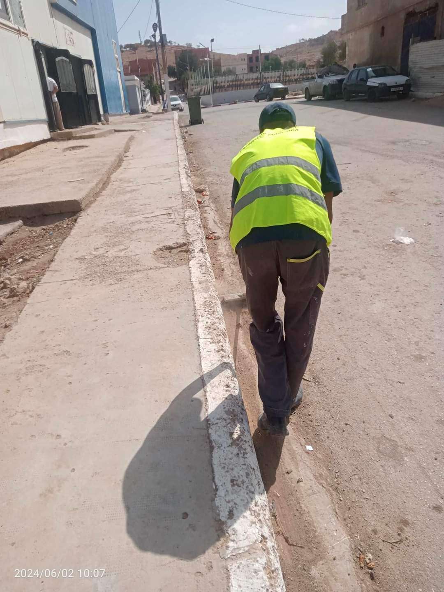
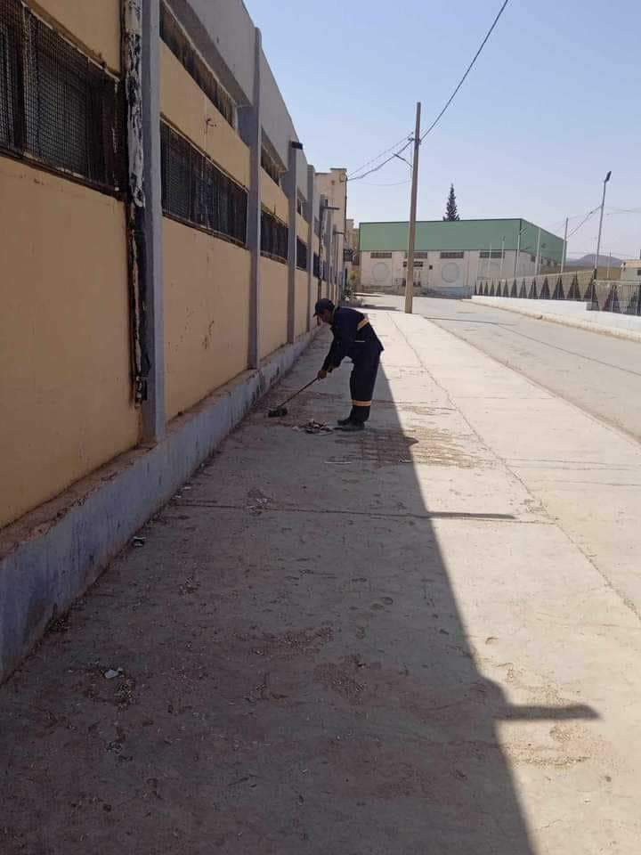
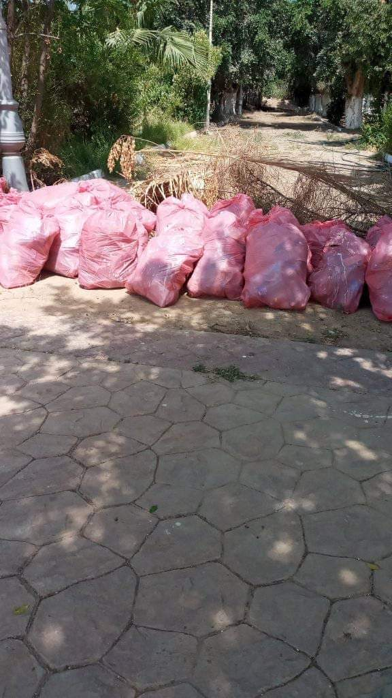
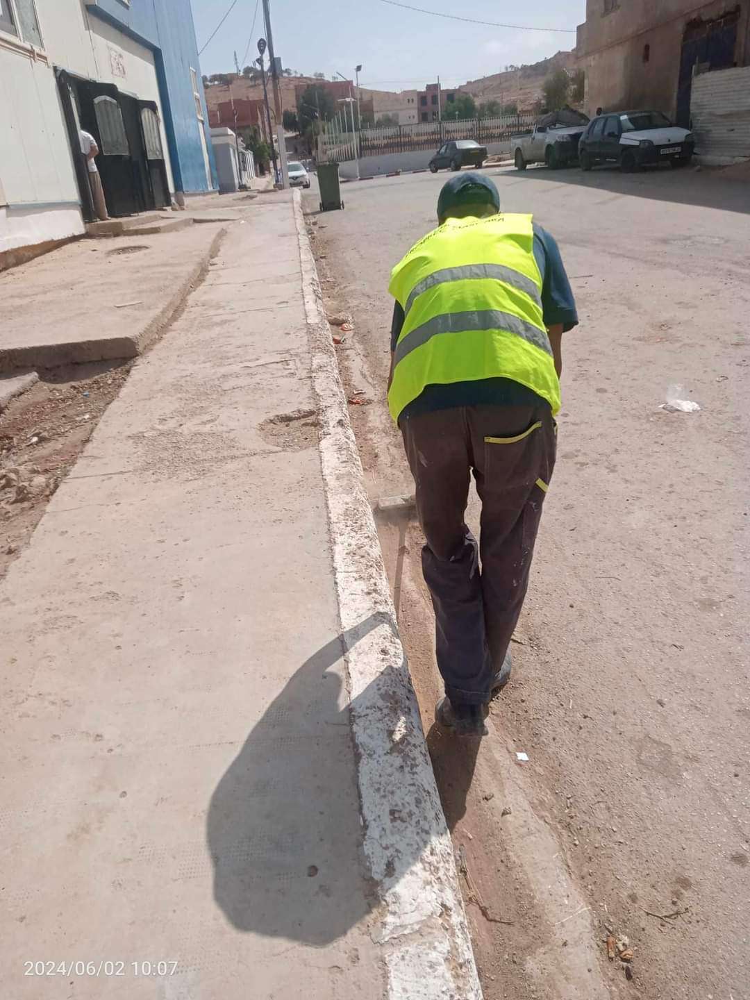
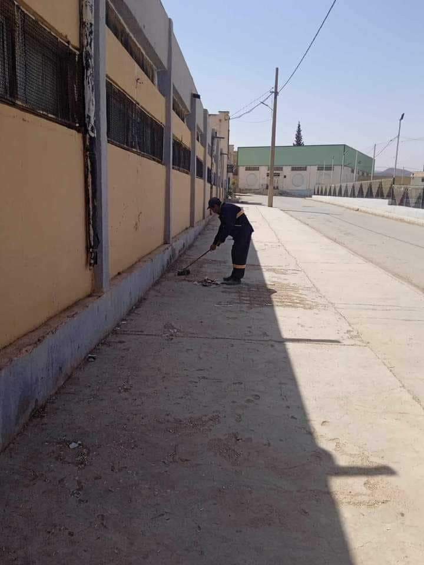
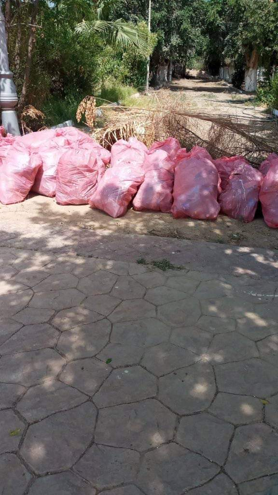


 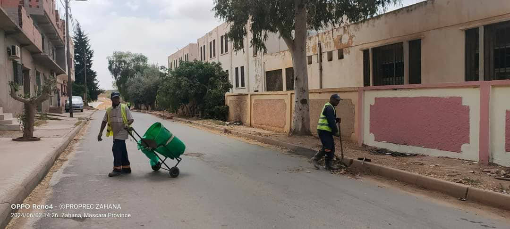
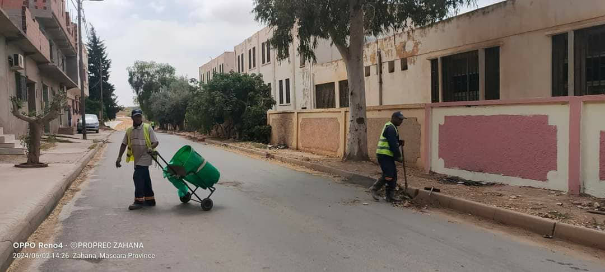


 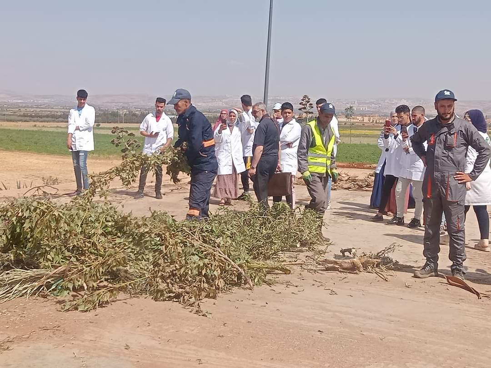
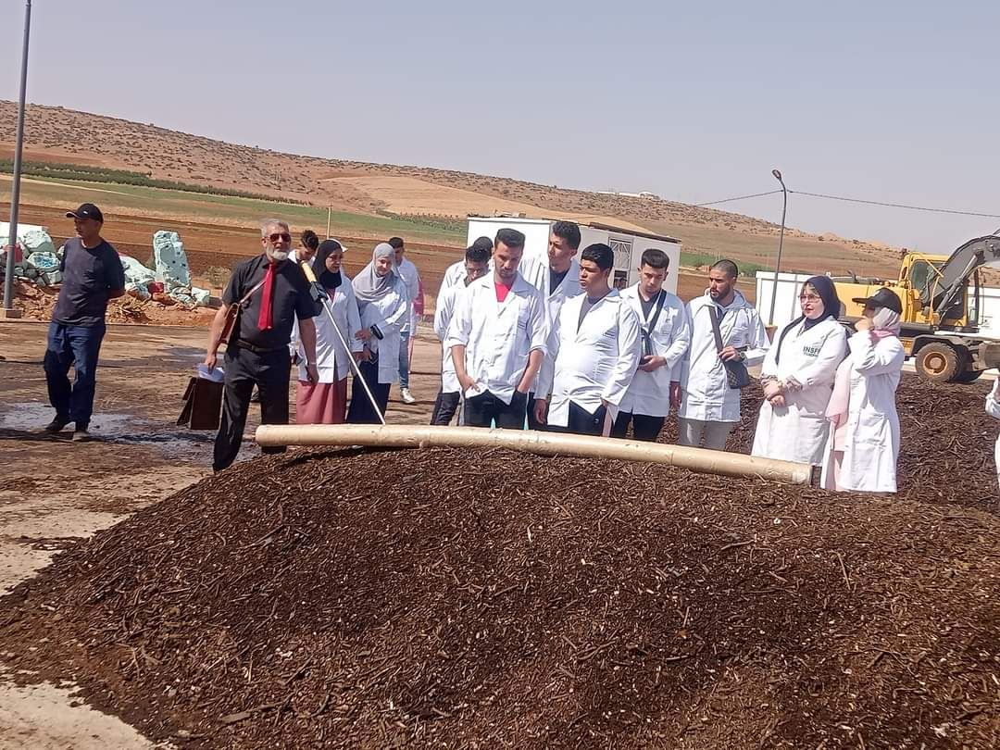
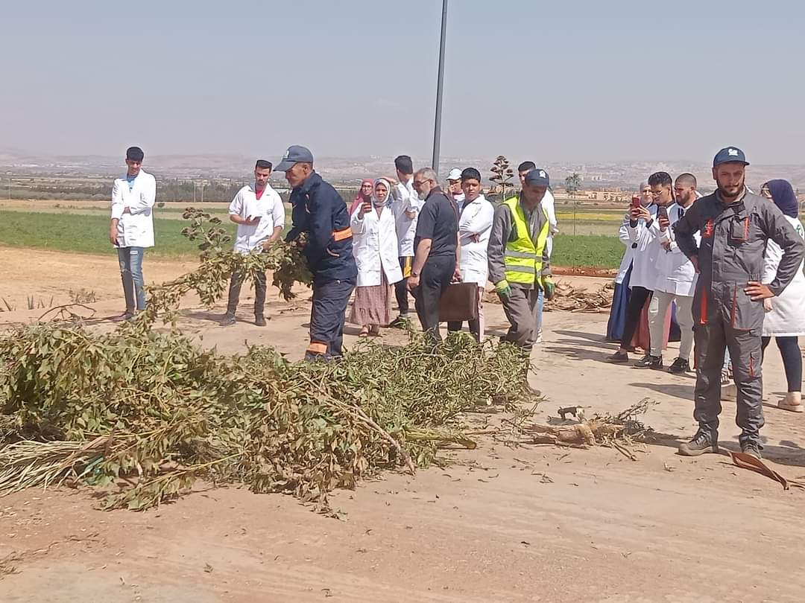
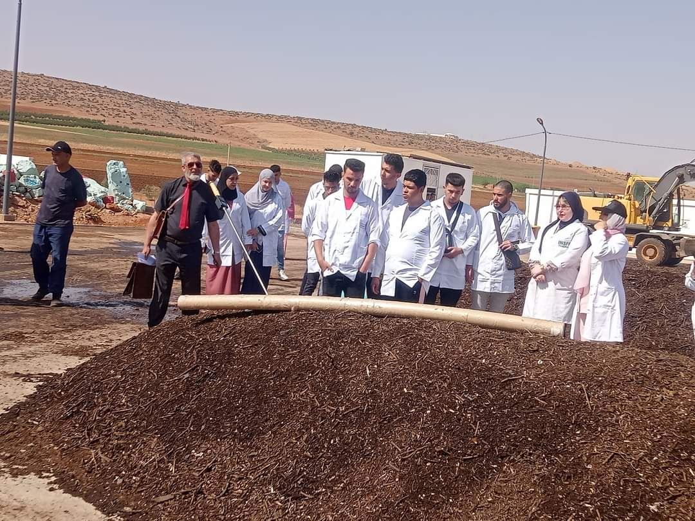